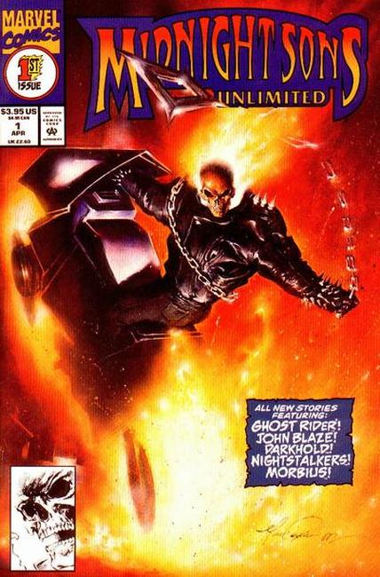

Series: 9 issues 1993
Publisher: Marvel
Cover by Mark Texeira
Issue #1:
- "Eyes of the Beholder" Written by Howard Mackie, Illustrations by Klaus Janson. Ghost Rider and Blaze take down an old woman who is using a demon to kill in Sleepy Hollow.
- "From the Light, Darkness" script by Chris Cooper, art by Joe Quesada and Jimmy Palmiott. The Darkholders investigate a prison inmate who was given a Darkhold Page.
- "On the Wings of Angels" starring the Nightstalkers, script by Dan (D.G.) Chichester, art by Cynthia Martin and Joe Rubinstein.
- "Blood is Thicker" script by Len Wein, art by Jerry Bingham; Morbius is captured by one of his old victim's brother.